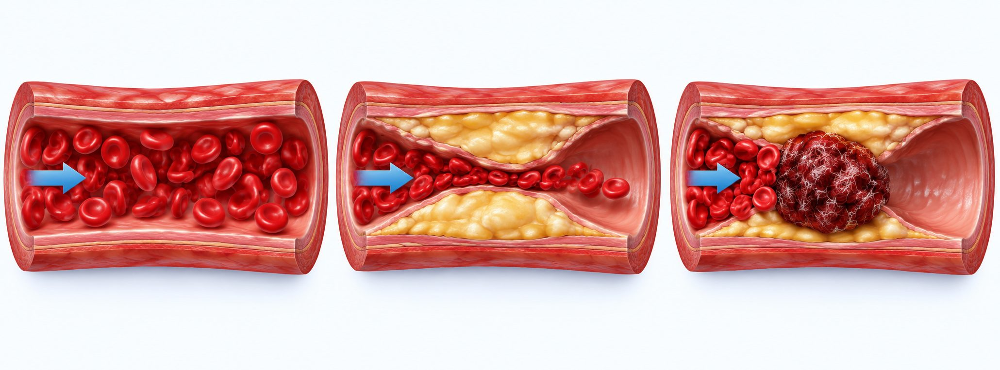

걱정해야 할 흉통 vs 덜 걱정스러운 흉통
걱정해야 할 흉통 vs 덜 걱정스러운 흉통
| 심장일 가능성이 있는 신호 — 아래 두 상자대로 | 덜 걱정스러운 신호 — 그래도 확인은 진료로 |
|---|---|
|
|
| 흔한 원인(비율은 대략) — 근육·관절·갈비뼈 약 50% · 위식도 역류 약 10~20% · 폐·기관지 약 10~18% · 불안·공황 약 10~18%. 당뇨가 있는 분·65세 이상·여성은 가슴이 덜 아파도 숨참·피로·체한 느낌으로 심장 문제가 올 수 있습니다. | |
이럴 때는 바로 119 — 약을 먹고 기다리지 마세요
- 1쥐어짜는 통증이 5분 넘게 — 혀 밑 니트로글리세린·휴식으로도 안 나아짐
- 2어깨·팔·턱·목으로 퍼짐 — 특히 왼팔 안쪽(새끼손가락 쪽)
- 3식은땀이 함께 남
- 4가슴 통증과 함께 숨참, 또는 갑작스러운 심한 숨참(통증 없이 숨참만 올 수도 있음)
- 5실신·어지럼·의식이 흐려짐
갑자기 찢어지는 듯한 통증이 등·목으로 옮겨 감, 숨 쉴 때 찌르며 숨이 몹시 참, 심하게 토한 직후의 극심한 통증, 누우면 심해지고 앞으로 숙이면 나아지는 통증도 응급입니다(목 혈관이 부풀고 혈압이 떨어지면 매우 위험). 통증이 심하고 갑작스러우면 먼저 119 — 기다리는 동안에는 움직이지 말고 편한 자세로 쉬세요.

정상 혈관좁아짐
= 협심증막힘
= 심근경색
= 협심증막힘
= 심근경색
- 1계단·운동 때 '윽!' → 쉬면 몇 분 안에 가라앉음 — 좁아진 심장 혈관 신호일 수 있습니다. 미루지 말고 진료 예약, 몇 분 갔는지 적어 오세요
- 2점점 자주 · 조금만 움직여도 · 가만히 있어도 아픔 — 막히기 직전일 수 있습니다. 지금 아프면 바로 119, 멎었어도 바로 응급실(운전 말고)
- 3원인 모를 통증을 진통제로 가리지 마세요 — 아픈 걸 알아야 합니다.
심전도가 정상이어도 안심은 이릅니다 — 혈관이 막힐락 말락 할 때는 심근경색이어도 첫 심전도가 정상일 수 있어, 응급실에서는 시간을 두고 피검사(트로포닌)와 심전도를 다시 합니다. 정상이었어도 119 상자 증상이면 바로 119.
| 집에서 지킬 것 — 진료로 심장 등 다른 원인이 아니라고 들은 분 | |||
|---|---|---|---|
| 1~3일 냉찜질 15~20분씩 · 처방 소염제 · 충분한 휴식 | 4~7일 온찜질로 바꾸기 · 가벼운 스트레칭·심호흡 | 1~2주 조금씩 움직이기 · 한 시간에 한 번 깊은 숨 | 다시 진료 통증이 바뀔 때 · 2주 안에 안 나을 때 |
| 하지 마세요 — 갈비뼈를 복대·붕대로 꽉 감기 · 얕은 숨만 쉬기 · 무거운 물건 들기·상체 비틀기 · 처방 없이 진통제를 오래 먹기. 쉬는 동안 숨참·식은땀이 새로 생기거나 통증이 더 심해지면 바로 119. | |||